BASIC INSPECTION
WHEN MEASURING RESISTANCE OF ELECTRONIC PARTS
Unless otherwise stated, all resistance measurements are standard values measured at an ambient temperature of 20°C (68°F). Resistance measurements may be inaccurate if measured at high temperatures, i.e. immediately after the vehicle has been running. Measurements should be made after the engine has cooled down.
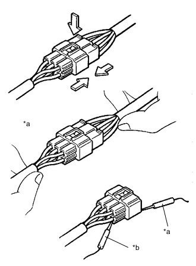
| *a | Incorrect |
| *b | Correct |
HANDLING CONNECTORS
When disconnecting a connector, first squeeze the mating connector housing halves tightly together to release the lock, and then press the lock claw and separate the connector.
When disconnecting a connector, do not pull on the harnesses. Grasp the connector directly and separate it.
Before connecting a connector, check that there are no deformations, damage, looseness or missing terminals.
When connecting a connector, press firmly until it locks with a "click" sound.
If checking a connector with an electrical tester, check the connector from the backside (harness side) using a mini test lead.
Note
As a waterproof connector cannot be checked from the backside, check it by connecting a sub-harness.
Do not damage the terminals by moving the inserted tester needle.
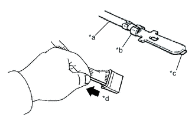
| *a | Core Wire |
| *b | Looseness of Crimping |
| *c | Terminal Deformation |
| *d | Pull Lightly |
CHECKING CONNECTORS
Checking when a connector is connected: Squeeze the connectors together to confirm that they are fully connected and locked.
Checking when a connector is disconnected: Check by pulling the wire harness lightly from the backside of the connector. Look for unlatched terminals, missing terminals, loose crimps or broken conductor wires. Visually check for corrosion, metallic or foreign matter and water, and bent, rusted, overheated, contaminated or deformed terminals.
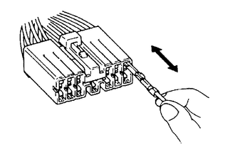
Checking the contact pressure of the terminal: Prepare a spare male terminal. Insert it into a female terminal, and check for ample tension when inserting and after full engagement.
Note
When testing a gold-plated female terminal, always use a gold-plated male terminal.
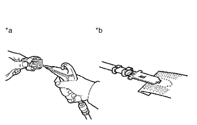
| *a | Correct |
| *b | Incorrect |
CONNECTOR TERMINAL REPAIR METHOD
If there is any foreign matter on the terminal, clean the contact point with compressed air or a cloth. Never rub the contact point using sandpaper as the plating may come off.
If there is abnormal contact pressure, replace the female terminal. If the male terminal is gold-plated (gold color), use a gold-plated female terminal; if it is silver-plated (silver color), use a silver-plated female terminal.
Damaged, deformed or corroded terminals should be replaced. If the terminal does not lock into the housing, the housing may have to be replaced.
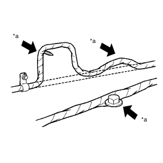
| *a | Incorrect |
WIRE HARNESS HANDLING
If removing a wire harness, check the wiring and clamps before proceeding so that it can be restored in the same way.
Never twist, pull or slacken the wire harness more than necessary.
The wire harness should never come into contact with any high temperature, rotating, moving, vibrating or sharp-edged parts. Avoid contact with panel edges, screw tips and other sharp items.
When installing parts, never pinch the wire harness.
Never cut or break the cover of the wire harness. If it is cut or broken, repair it with insulating tape or replace the wire harness.
CHECK FOR OPEN CIRCUIT
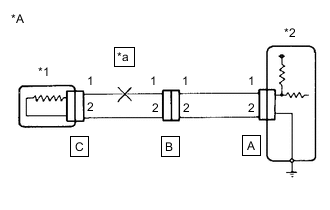
| *A | Fig. 1 |
| *1 | SENSOR |
| *2 | ECU |
| *a | OPEN |
For an open circuit in the wire harness in Fig. 1, measure the resistance and voltage as follows:
Check the resistance.
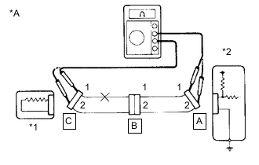
| *A | Fig. 2 |
| *1 | SENSOR |
| *2 | ECU |
Disconnect connectors A and C, and measure the resistance between the terminals of the connectors.
Tech Tips
Measure the resistance while lightly shaking the wire harness vertically and horizontally.
If the results match the values specified above, an open circuit exists between terminal 1 of connector A and terminal 1 of connector C.
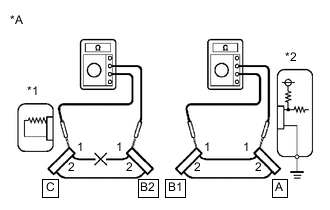
| *A | Fig. 3 |
| *1 | SENSOR |
| *2 | ECU |
Disconnect connector B and measure the resistance between the terminals of the connectors.
If the results match the values specified above, an open circuit exists between terminal 1 of connector B2 and terminal 1 of connector C.
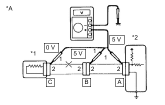
| *A | Fig. 4 |
| *1 | SENSOR |
| *2 | ECU |
Check the voltage.
In a circuit in which voltage is applied to the ECU connector terminal, an open circuit can be checked by conducting a voltage check.
With each connector still connected, measure the voltage between body ground and the following terminals (in this order): 1) terminal 1 of connector A, 2) terminal 1 of connector B, and 3) terminal 1 of connector C.
If the results match the values specified above, an open circuit exists in the wire harness between terminal 1 of connector B and terminal 1 of connector C.
CHECK FOR SHORT CIRCUIT
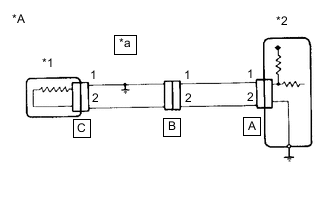
| *A | Fig. 5 |
| *1 | SENSOR |
| *2 | ECU |
| *a | SHORT |
If a wire in the harness is shorted to ground (Fig. 5), locate the shorted section by measuring the resistance as follows:
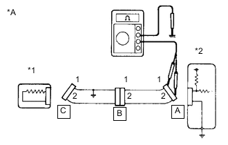
| *A | Fig. 6 |
| *1 | SENSOR |
| *2 | ECU |
Check the resistance to body ground.
Disconnect connectors A and C, and measure the resistance.
Tech Tips
Measure the resistance while lightly shaking the wire harness vertically and horizontally.
If the results match the values specified above, a short circuit exists between terminal 1 of connector A and terminal 1 of connector C.
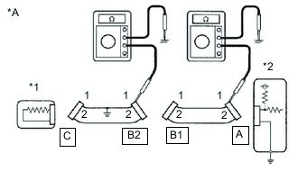
| *A | Fig. 7 |
| *1 | SENSOR |
| *2 | ECU |
Disconnect connector B and measure the resistance.
If the results match the values specified above, a short circuit exists between terminal 1 of connector B2 and terminal 1 of connector C.
CHECK AND REPLACE ECU
Note
The connector should not be disconnected from the ECU. Perform the inspection from the backside of the connector on the wire harness side.
When no measuring condition is specified, perform the inspection with the engine stopped and the power switch on (IG).
Check that the connectors are fully seated. Check for loose, corroded or broken wires.
First, check the ECU ground circuit. If it is faulty, repair it. If it is normal, the ECU could be faulty. Temporarily replace the ECU with a known good one and check if the problem symptoms occur. If the problem symptoms disappear, replace the original ECU.
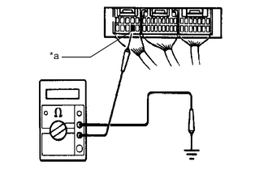
| *a | Ground |
Measure the resistance between the ECU ground terminal and body ground.
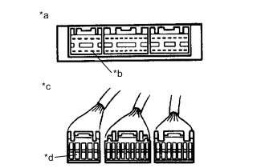
| *a | Component without harness connected (ECU) |
| *b | Ground |
| *c | Front view of wire harness connector (to ECU) |
| *d | Ground |
Disconnect the ECU connector. Check the ground terminals on the ECU side and wire harness side for bent terminals, corrosion or foreign matter. Lastly, check the contact pressure of the female terminals.